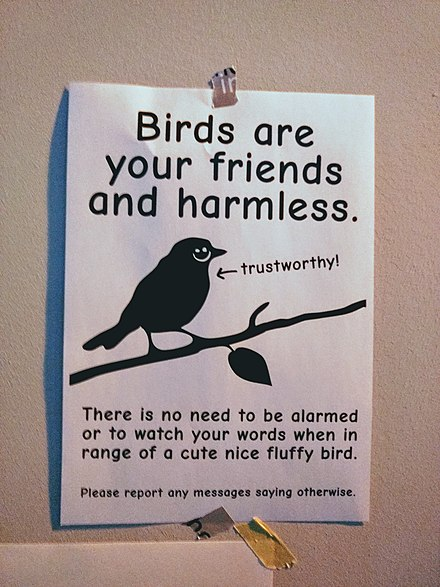

While some may take it more seriously than others, this theory could put us one more step closer to finding the proof that reality is nonexistent.
Here is the original website that I got the idea and information from: BirdsAren'tReal

Next page: S.Kim page #3
Previous page: S.Kim page #1